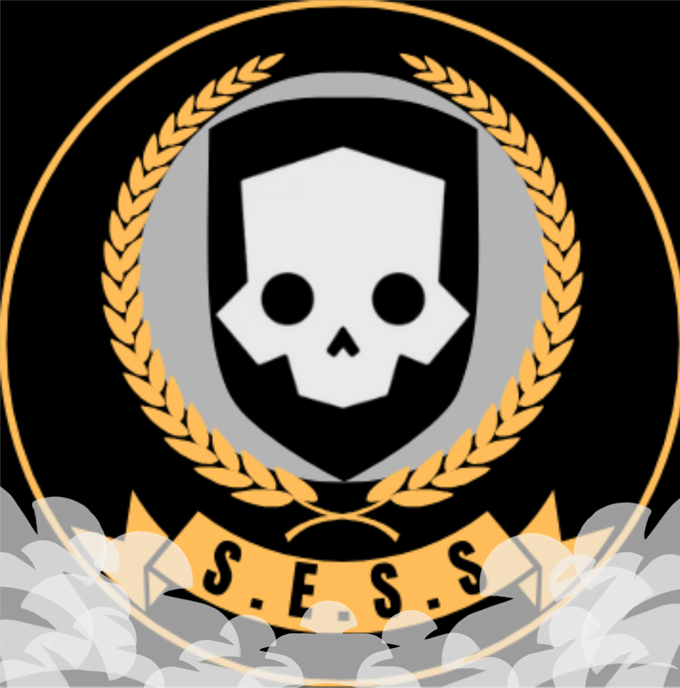

The S.E.S.S (Super earth, Shadow, Service)

Founded on 9th of February 2026.
. Classified information. There is limited information about this special service as of its secrecy.
The S.E.S.S is a special secret service branch of the Super earth army command. The Service specialises in reconnaissance, sabotage and stealth to make sure the maximum effect on the enemies of tyranny and with little to no casualties.
They specialise in using the R-72 Censor and the AR-59 Suppressor. They usually were the RS-89 Shadow Paragon and the RS-67 Null Cipher Armor. This Armor is equipped with the reduced signature passive Ability to stay hidden from the enemy. There is no set armour to identify them, but when they need to go stealth on the bot front, they will change to their full stealth gear.
Even though the S.E.S.S specialise on stealth they will make sure that the major order is completed. They will adapt to cope with the enemy and planet when there is no need for stealth and reconnaissance.